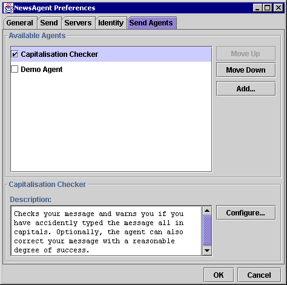

The Preferences Dialog: Send Agents Panel |
You can access the preferences dialog from the Edit: Preferences menu item, then by clicking on the Send Agents tab.

The Send Agents Panel displays information about all Send Agents you have installed for your copy of NewsAgent and allows you to enable, disable and configure them.
This list contains all the Send Agents that are currently installed. This is a combination of the user property newsagent.agents.send.installed and a list of internal agents which are supplied with NewsAgent.
You can set whether an agent is enabled or disabled by double clicking on the item in the list. The checkbox to the left of each item shows whether it is currently enabled.
Enabled send agents are stored in the newsagent.agents.send.active property, in the same order as they appear in this list.
When you select an agent in the list (by single clicking on it), its details appear in the half of the panel.
These buttons change the order in which agents are activated at the time your message is sent. Agents at the top of the list get the first chance to modify or check your message, and then the message (with any modifications) is passed to the next agent in the list until the last one is reached, at which point the message is sent, unless one of the Agents reported a problem.
|
Adding new Agents is an advanced operation, you should only try this if you are an experienced user or a developer. More information on developing your own Agents is available in the advanced topics [link] section of this user manual. |
This button allows you to add a new Send Agent to NewsAgent. It displays a dialogue prompting you for the full classname of the Agent you wish to install.
For instance, if you have created an Agent called MyTestAgent in a Java package called myagents, you should have a compiled Java file called MyTestAgent.class in a subdirectory myagents of your Java CLASSPATH. In this case, the full classname you should enter into the dialogue is:
myagents.MyTestAgent
If for any reason your Agent can't be found or instantiated, an error dialogue will be displayed. You should check your typing and your CLASSPATH carefully if this happens. In addition, make sure your Agent class subclasses uk.ac.st_and.dcs.newsagent.agent.ISendAgent.
Contains a description of the currently selected NewsAgent.
This text field is empty if no agent is currently selected.
Displays a dialogue you can use to customise the selected Agent. This dialog is defined by the Agent programmer, and you should consult the documentation for the Agent for more information.
In the current version, NewsAgent doesn't disable this button if the Agent doesn't have a configuration dialogue. If you click on the button for such an Agent, nothing will happen, but the button will become disabled. This will be fixed in a future version of NewsAgent.
Save or abort changes to preferences.
Next Page: List Agents Panel